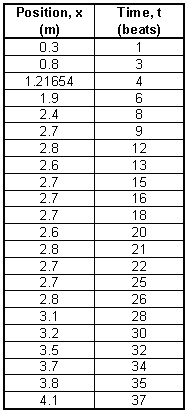

Review the scenario below and answer the following questions as quickly and as completely as possible. If this is your first physics lab at Clemson, make sure that your group contains at least one person who took the 124 lab course last semester. Your group will be called on to orally answer several of the questions. Use concrete reasoning to answer your questions. When called upon, speak clearly and validate your reasoning with data. You will have about 2 minutes to present your answers to the class.
The "Experiment"  Imagine that you are sitting on a park bench watching pedestrians stroll along a sidewalk. The sidewalk is comprised of concrete blocks 1.0 meters wide. The edges of the concrete blocks serve as reference points which are used to determine the position of the passersby. To measure the passage of time, you decide to use, like Galileo before you, the beating of your own heart. It is determined that your heart beats between 59 and 61 times per minute. To the right is the data taken from your observations of the movements of one person on the sidewalk. Your group should enter this data into an Excel spread sheet and answer the questions below. Use the Online Assistance links to help you.
Online Assistance
Questions to be Answered Orally
Homework Assignment Prepare a written abstract on your observations of this "experiment". Make sure that your Abstract directly and succinctly describes your observations, using numerical data to support your findings where possible. The abstract should include all pertinent results of the experiment, and yet remain concise. The abstract should be limited to one or two short paragraphs. Come with the Abstract printed out as well as saved on a floppy disk.]
Data, Results and Graphs
Answers to Questions
If you have a question or comment, send an e-mail to Lab Coordiantor: Jerry Hester
|
||||
|
|

Copyright © 2006. Clemson University. All Rights Reserved. Photo's courtesy Corel Draw. Last Modified on 01/27/2006 14:25:18 |